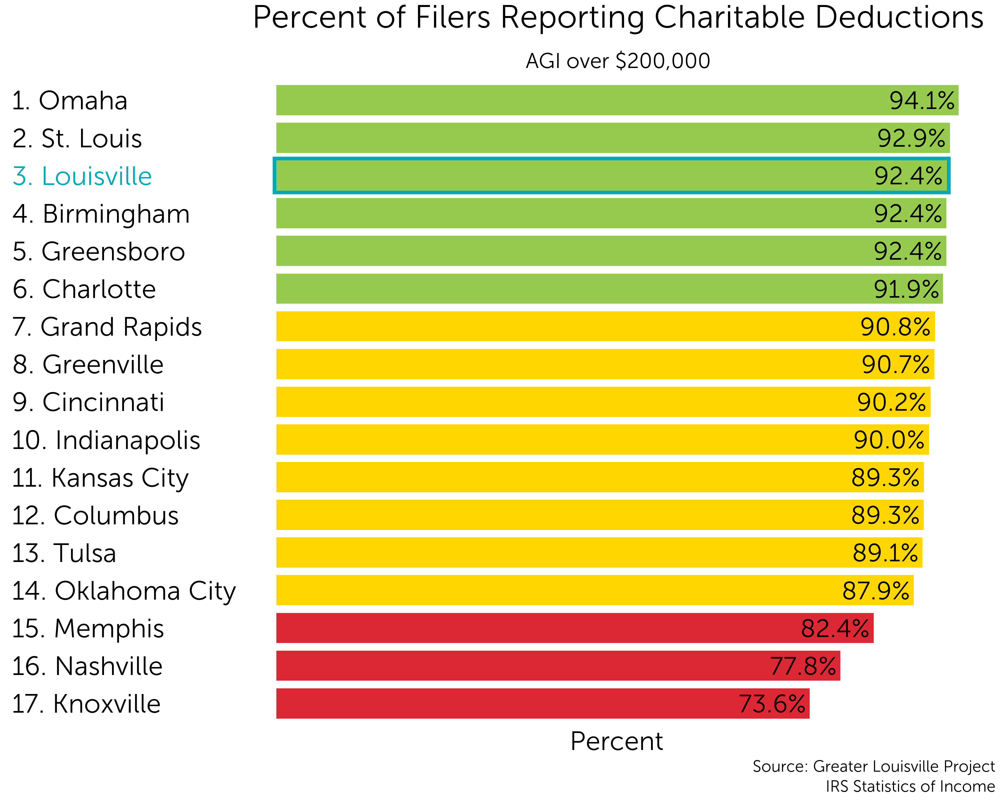
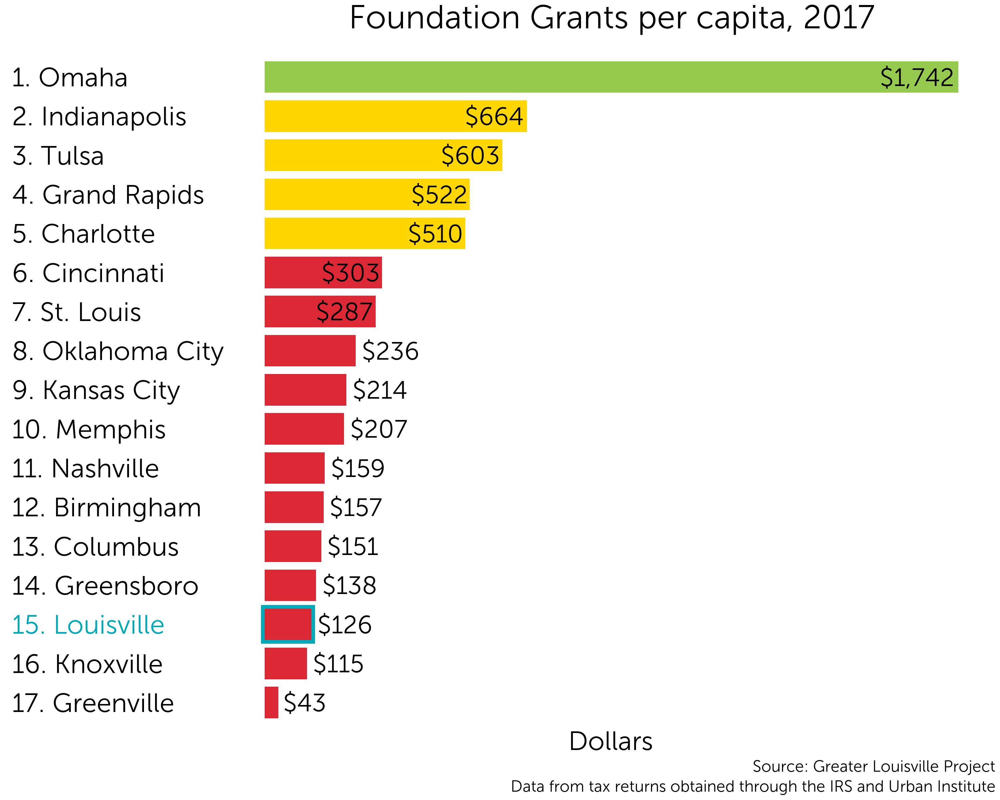
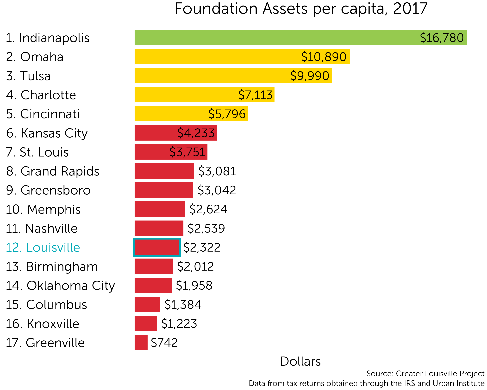
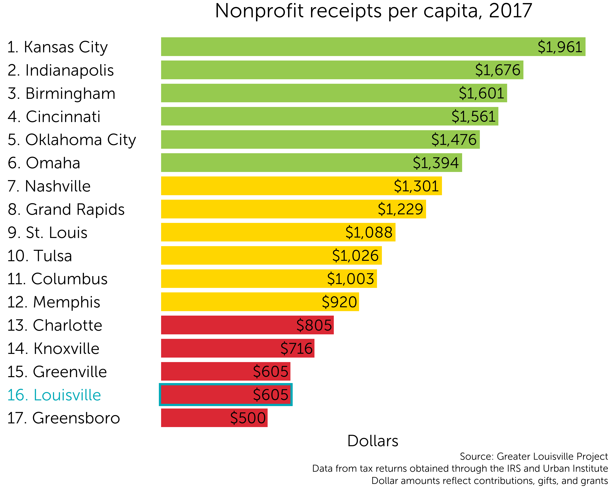

Social Investment
Individual Giving
Individual giving measures the amount of donations individuals make to organizations such as charities and churches. Our data comes from IRS tax filings. We focus on data for filers with an income over $200,000 because they have a very high rate of itemizing deductions, so the data is very complete. We find that while Louisville ranks 2nd in the percentage of residents donating to charity, Louisville ranks 16th in the percentage of income donated.
Ranking
Louisville ranks toward the bottom of its peers in terms of the percent of income donated by filers with an Adjusted Gross Income of over $200,000, the highest income group available in the data.

Trend
Over time, the average percent of income donated among Louisville’s peer cities has increased, while the average percent of income donated in Louisvile has remained fairly constant. In 2017, Louisville filers with an AGI of over $200,000 donated an average of 3.5% of their income compared to a eer average of 4.5%. If residents in this income group donated an addition 1% of their income so Louisville were at the peer average, an additional

Participation
Among almost all peer cities, donor participation is very high. In fact, Louisville has one of the highest rates of reported charitable donations among those with an income of over $200,000.

Sources and notes
Methodology
Our calculations are based on charitable deductions recorded in tax documents. We calculate the average percent of income donated by dividing the total amount of charitable giving deductions by the total amount of income.
There are some caveats to the data. Tax decutions for charitable donations are limited to 60% of a person’s AGI, so some donations made above this limit are not captured in the data. It is also likely that tax filers sometimes over- or under-report their donations due to human error or issues with recordkeeping. While issues of accuracy are possible, filers do have a large incentive to report accurate data to both maximize their deductions and avoid penalties from the IRS.
Individual giving data comes from the IRS’s Statistics of Income County data available here: https://www.irs.gov/statistics/soi-tax-stats-county-data
Income brackets
We focus on the top income bracket because almost all filers itermize their deductions, so the data set is very complete. While we would like to perform an analysis of all income brackets, the data for income brackets below $200,000 is much less complete. For example, about 79% of Louisville filers in the $25,000 to $49,999 bracket opted to take the standard deduction instead of itemizing their deductions. Some of these filers likely donated to charity, but not at a rate that made itemizing preferable to the standard deduction.
| Adjusted Gross Income | Percent of Louisville Returns Itemized | Percent of Peer Returns Itemized |
|---|---|---|
| Under $1 | 0.0% | 0.0% |
| $1 to $25,000 | 5.7% | 5.3% |
| $25,000 to $49,999 | 20.8% | 17.5% |
| $50,000 to $74,999 | 44.3% | 37.8% |
| $75,000 to $99,999 | 61.4% | 51.4% |
| $100,000 to $199,999 | 83.6% | 75.1% |
| $200,000 or more | 97.5% | 94.4% |
Income vs. AGI
There is a slight difference in the data when calculating donations as a percent of AGI vs income. We show donations as a percent of income in the above graphs for simplicity, but you can see the minor differences between the two below. Both methods result in roughly the same data for Louisville: filers with an AGI of over $200,000 donated 3.5% of their income in 2017, placing Louisville 16th among its peers.
Income
AGI

Foundation Grants
Foundation grants are one of the major sources of funding for nonprofit organizations. Endowed resources have become an increasingly important source or revenue for nonprofits: as a percentage of national charitable giving, foundation grants have increased from 12% of national giving in 2000 to 18% in 2018.
Grants Ranking
In 2017, Louisville ranked toward the bottom of its peers in the amount of grants issued by philanthropies.

Assets Ranking
Louisville ranks slightly higher in terms of overall philanthropic assets.

Nonprofit Donations
Ranking
As a result of relatively low individual contributions and foundation grantmaking in our city, Louisville ranks second to last among its peers in the donations received by nonprofit organizations.

Fondation and nonprofit financial data comes from IRS 990 documents. For the purposes of this analysis, we chose to separate hospitals, schools, and community foundations from the majority of our analysis. While these organizations are incredibly valuable, they are also very large. The amount of money flowing through nonprofit hospital systems, university endowments, etc. is very large compared to the rest of the nonprofit ecosystem, and excluding them from our data allows us to focus on the amount of resources available to the rest of the nonprofit community, which would otherwise be overshadowes.